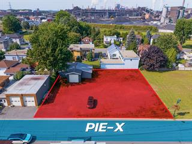

À vendreTerrain polyvalent · Centris 11195733
Rue
Pie-X
Saint-Joseph-de-Sorel, Québec
199 000 $
12 000pieds carrés
C-1 · C-2classification
30 joursoccupation
L’occasion
Un terrain qui ouvre
plusieurs portes.
Avec 12 000 pi², un garage isolé et un zonage résidentiel et commercial, cette propriété offre une base flexible pour un projet d’affaires, des bureaux, un atelier ou une nouvelle construction, sous réserve des autorisations municipales.
Caractéristiques
Un potentiel polyvalent.
Superficie du terrain12 000 pi²
ZonageCommercial et résidentiel
ClassificationC-1 et C-2
Bâtiment existantGarage isolé
MarcheScore 67
Occupation30 jours après acceptation
Valeur et frais
Repères financiers.
Évaluation municipale 2026162 700 $
Valeur du terrain144 900 $
Taxes municipales1 433 $
Taxes scolaires82 $
Localisation